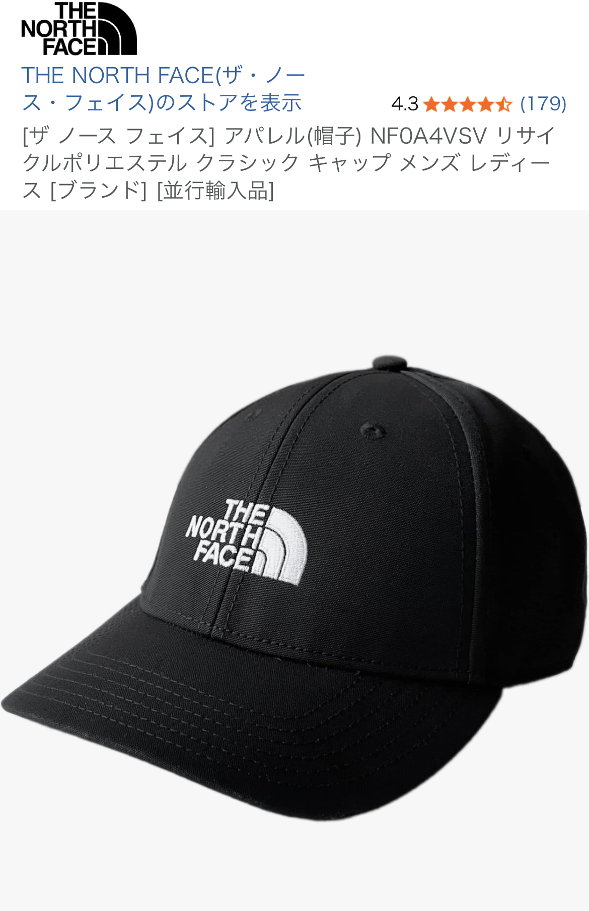

THE NORTH FACE RCYD 66 CLASSIC HATレビュー｜ニューエラと併用して分かった「オシャレさ」と使いやすさ
投稿日：2025-08-17
カテゴリ：ファッション小物・キャップ

結論：シンプルに「オシャレで買ってよかった」と言える定番キャップ
THE NORTH FACEのRCYD 66 CLASSIC HAT（TNF Black/TNF White）は、 一言でまとめると「シンプルなのにきちんとオシャレに見える、外しにくいキャップ」です。
実際の口コミでも、 「オシャレで、買ってよかったです」「背面の金属タブ留め機構がオシャレ」 「カラーリングもノースフェイスらしくて良い」といった声があり、 デザイン性への満足度がかなり高いアイテムです。
ニューエラのキャップと併用しているユーザーのレビューもあり、 「ストリート寄りのニューエラ」「アウトドア・タウンユース寄りのノースフェイス」という形で 使い分けると、コーデの幅が一気に広がります。
実際の口コミから分かるポイント
「オシャレで買ってよかった」と感じる理由
今回参考にした口コミでは、以下のようなポイントが高く評価されています。
- デザイン：ロゴとカラーリングが「ノースフェイスらしくて良い」
- 背面の金属タブ：サイズ調整用の金属タブ留めがアクセントになってオシャレ
- 満足度：「買ってよかった」と言い切れるレベルで満足度が高い
特に背面の金属タブ留め機構は、後ろ姿の印象を引き締める「デザインパーツ」として優秀。 キャップは後ろ姿もよく見られるため、この部分が安っぽくないのは大きなメリットです。
ニューエラと併用するメリット
ニューエラと併用しているという口コミから分かるのは、 「シーンによってキャップを使い分けると、コーデが一段階アップする」ということです。
- ニューエラ：ストリート感・スポーティさを出したい日
- ノースフェイス：アウトドア・タウンユース・きれいめカジュアル寄りの日
同じブラック系キャップでもブランドの雰囲気が違うため、 「今日はノースフェイスで落ち着いた印象にしよう」といった使い分けができます。
デザイン・カラーリング：TNF Black/TNF Whiteの安心感
今回のレビュー対象カラーはTNF Black/TNF White。 ベースはブラック、ロゴはホワイトという非常にベーシックな配色で、 まさに「ノースフェイスらしい」カラーリングです。
ブラックベースのキャップは、 ・服装を選ばない、 ・汚れが目立ちにくい、 ・季節を問わず使える という3つのメリットがあり、1つ持っておくと年間を通して出番が多くなります。
ロゴもホワイトでくっきりと見えるため、 「ノースフェイスをさりげなく取り入れたい」「ブランドロゴは欲しいけど主張しすぎは嫌」 というニーズにちょうどハマるバランスです。
かぶり心地とサイズ感（一般的な特徴ベース）
RCYD 66 CLASSIC HATは一般的に調整可能なフリーサイズとして展開されており、 後部のアジャスターで頭周りに合わせてフィット感を調整できます。
フリーサイズのキャップは「きつすぎる」「ゆるすぎる」といった失敗を避けやすく、 家族やパートナーと共有しやすいのもメリットです。
ノースフェイスのキャップはタウンユースとアウトドアの両方を意識した作りが多く、 日常使いでも浮きにくいデザインになっています。
どんなコーデに合う？具体的なイメージ
1. カジュアルな休日コーデに
Tシャツ＋デニム＋スニーカーのシンプルなコーデに、 このキャップを足すだけで「アウトドアブランドらしいこなれ感」が出ます。
2. スポーツ・アウトドアシーンに
ランニング、キャンプ、フェスなどのアクティブなシーンでも、 ブラックのキャップはウェアの色を選ばず合わせやすいです。
3. きれいめカジュアルの“外し”として
シャツやスラックス寄りのきれいめコーデに合わせると、 程よく力の抜けた印象になります。
こんな人におすすめ
- ニューエラは持っているが、落ち着いたキャップも欲しい人
- アウトドアブランドを普段着に取り入れたい人
- ブラック系で失敗しにくいキャップを探している人
- 背面まで含めて“オシャレなキャップ”が欲しい人
購入前の注意点
- ロゴの主張：ロゴがしっかり見えるため、控えめが好きな人には強く感じる可能性あり。
- ブラックは人気色：定番カラーのため、在庫切れになることもある。
まとめ：ニューエラ持ちにもおすすめできる万能キャップ
THE NORTH FACE RCYD 66 CLASSIC HAT（TNF Black/TNF White）は、 実際の口コミどおり「オシャレで、買ってよかった」と言いやすいキャップです。
背面の金属タブ留め機構がアクセントになり、 ノースフェイスらしいカラーリングとロゴで、シンプルなコーデも一段階引き上げてくれます。
すでにニューエラを持っている人でも、 「もう1本の軸」としてノースフェイスを持つと、気分やコーデで選べる楽しさが増えます。
※本記事は、実際のユーザー口コミと一般的な製品特徴をもとに構成しています。
購入時期や販売サイトによって仕様・価格が異なる場合があります。